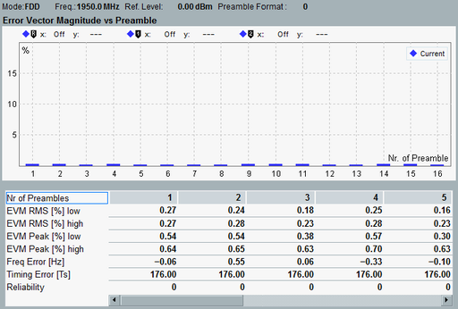

Views EVM vs Preamble, Power vs Preamble
This section applies to the following detailed views:
- "Error Vector Magnitude vs Preamble"
- "Power vs Preamble"
Each of these multi-preamble views shows a diagram and a statistical overview of results.

EVM vs Preamble view
The diagram shows results for a configurable number of preambles (up to 32), labeled 1 to n. The preambles are captured within one measurement interval. A preamble is captured every 40 ms.
- "Error Vector Magnitude vs Preamble":
The diagram displays EVM RMS values. For each preamble, either the result determined for low EVM window position or the result determined for high EVM window position is shown - whichever is higher. So for this diagram, the setting "EVM Window Position" is ignored. - "Power vs Preamble":
The diagram displays TX power values (received power, RMS averaged over all samples within the preamble duration).
The table below the diagram shows additional results. Each column corresponds to one preamble with the preamble label indicated as column title.
The upper rows correspond to the results presented in the "TX Measurement" view. For a description, see "View TX Measurement".
The row "Reliability" provides a reliability indicator for each preamble. For a description of the individual values, see "Reliability Indicator".